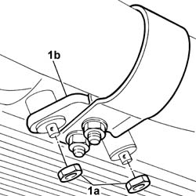
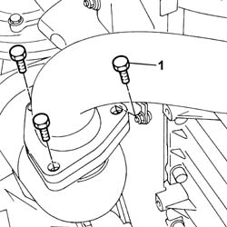
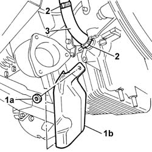
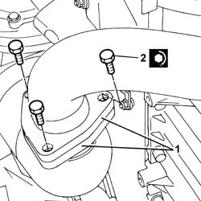

1084B42 Engine oil return pipe to turbocharger
- Path
- Procedures > 10 ENGINE > 1084 ENGINE LUBRICATION > 1084B ENGINE OIL LUBRICATION CIRCUIT > 1084B42 Engine oil return pipe to turbocharger
- Kind
- repair procedure (removal / refitting; the operation number is the code)
- Applies to
- engines: 2.4 JTD 20V; all production periods
- Interactive page
- https://sloeber94.github.io/elrnDB-lThss/en/#/850911
Applies to: engines: 2.4 JTD 20V; all production periods
 Removing
Removing
 Refitting
Refitting- Position the vehicle on a lift.
- Raise the vehicle.
See in Op. 7055B54 PROTECTION/GUARD under engine - R.R.
- Raise the vehicle.
1. Undo the nuts (1a) fixing the mounting bracket (1b) for the front section of the exhaust pipe.

Applies to: engines: 2.4 JTD 20V; all production periods
1. Undo the bolts fixing the front section of the exhaust pipe to the catalytic pre-converter.
- Lower the front exhaust pipe section and move aside.
- Keep the gaskets for the front section of the exhaust pipe.

Applies to: engines: 2.4 JTD 20V; all production periods
1. Undo the fixing nuts (1a) and remove the shield (1b).
2. Disconnect the oil return hose to the sump from the turbocharger and sump.
3. Remove the engine oil return pipe.

Applies to: engines: 2.4 JTD 20V; all production periods
Refitting
Removing- Fit the turbocharger engine oil return pipe and secure it using new bands.
- Fit the metal protection and tighten the fixing nuts.
1. Join the front exhaust pipe section flange to the catalytic preconverter flange and tighten the bolts.
- During this operation, it is good practice to fit a new gasket between both flanges.
2. Tighten the fixing bolts to torque.
 | Value - daNm | Fastening | Component | Ø |
|---|---|---|---|---|
2 | (Preconverter) 2.8 | Bolts | EXHAUST PIPE TO ENGINE | - |

Applies to: engines: 2.4 JTD 20V; all production periods
- Tighten the nuts fixing the mounting bracket for the front section of the exhaust pipe to the oil sump to torque.
See in Op. 7055B54 PROTECTION/GUARD under engine - R.R.
- Lower the vehicle.
- Remove the vehicle from the lift.